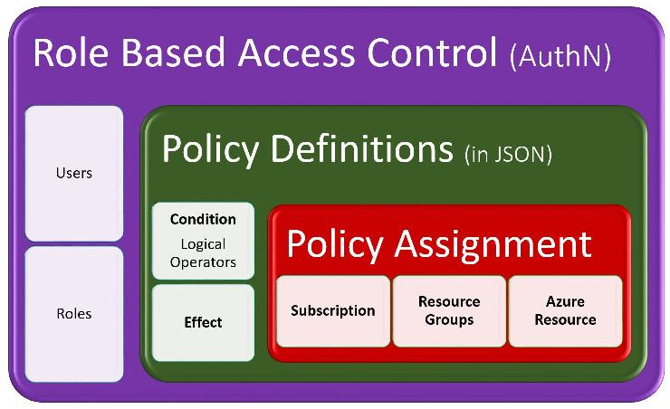

Controle de acesso Azure.
Existem algumas formas de controlar os acessos dentro da plataforma Azure.
As formas mais utilizadas são controle de acesso via Azure Policy e o RBAC(Role based access control).
O interessante é que cada capacidade não precisa trabalhar isoladamente, podem trabalhar em conjunto.
Combinando as duas capacidades, podemos garantir a segurança e conformidade do sistema.
Com essas capacidades, podemos controlar quem pode acessar e o que ela pode acessar.
Diferenças entre Azure Policy e RBAC.

Apesar das duas capacidades controlarem acessos na plataforma Azure, os propósitos
são diferentes.
O Azure Policy controla o acesso verificando se a conformidade está de acordo com
as regras de negócio.
Por exemplo, podemos restringir acessos de usuários da Europa, liberando somente
acesso de usuários de um determinado continente.
Já o controle de acesso RBAC, controla o acesso micro, verificando por perfil e
liberando ou restringindo acessos a determinados recursos.
Por exemplo, podemos restringir ou liberar determinados usuários a acessar um
recurso ou até grupos de recursos.
Conclusão.
Políticas de segurança combinadas com controles de acessos garantem integridade e a conformidade do sistema dentro da plataforma.